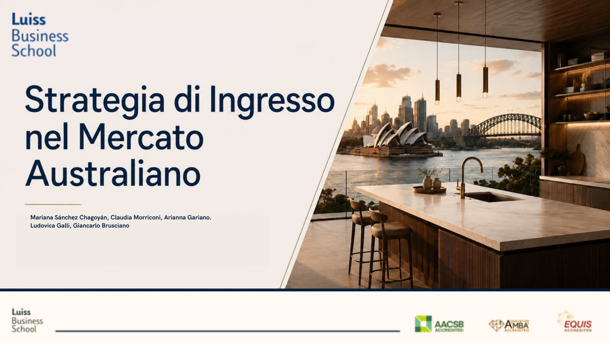

A curated selection of international expansion projects developed through academic
consultancy, market entry research and export management strategy.

01
ARAN World — Australian Market Entry Strategy
Company Collaboration · LUISS Business School · 2026
Real company collaboration focused on ARAN World's expansion into Australia. The
project identified priority cities, mapped distributors and proposed a dual-channel
strategy combining premium retail and contract opportunities.
Independent Consultancy Case · Fashion & Luxury · 2025-2026
International export assessment for selective market entry. The strategy prioritised
UAE, Australia and Italy through market attractiveness analysis, digital export and
omnichannel growth planning.
International Market SelectionDigital ExportOmnichannel Strategy
LUISS Business School
Master in Marketing Management, Major in Export Management per il Made in Italy.
Academic foundation in internationalisation, export planning and global competitiveness.
03
Export Management Academic Path
LUISS Business School · Completed in 2026
These projects are grounded in an academic path focused on internationalisation,
marketing, made-in-Italy competitiveness and strategic decision-making for global growth.
Export ManagementInternational MarketingMade in Italy